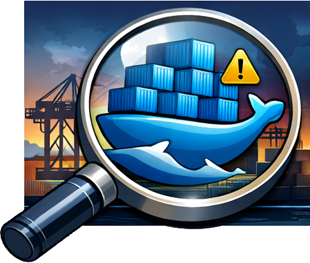

DockObserver
Lokal neu einlesen
Batch Update-Check
Letzter lokaler Scan: –
Letzter automatischer Check: –
0 Images
Update bestätigen
Image prune nach Update ausführen (`docker image prune -af`)
Abbrechen
Update starten
Update Konsole
Schließen